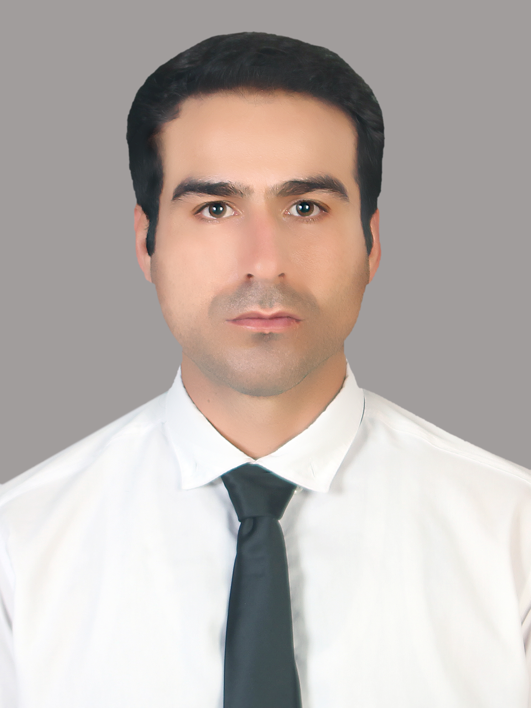

پژوهشگر مستقل | سامانههای پیشرفته و فناوری پلاسما / هستهای
محمدرضا صیفی یک پژوهشگر و متولد کشور ایران، متولد ۴ مارس ۱۹۸۵ است. او یک پژوهشگر در زمینههای فناوریهای پیشرفته و متخصص پیشرانهای هستهای NTP فضاپیما از دانشگاه MAI روسیه است. این پژوهشگر در زمینههای فناوریهای پیشرفته مانند سیستمهای پلاسما و علوم بینرشتهای مهندسی پیشرانهای هستهای و فیزیک پلاسما و متخصص پیشرانهای هستهای NTP و استفاده از مکانیزم تحلیل و محاسبات از طریق AI را در کارنامه خود دارد. این پژوهشگر از دانشگاه MAI روسیه مدرک ارشد سطح دکتری مهندسی تخصصی پیشران هستهای NTP را دارد و یک پژوهشگر ممتاز بوده که در علوم مهندسی بینرشتهای پیشران هستهای NTP در بین ۴۰ پژوهشگر تراز اول جهانی قرار دارد و در زمینههای مختلف تکنولوژی نوین و مهندسی بینرشتهای تجربههای پژوهشی زیادی دارد. اما اطلاعات دقیقی در مورد کل رزومههای او در دسترس نیست چون اطلاعات عمومی در مورد پروژههای فوق محرمانه و طبقهبندی شده در مورد بعضی از پژوهشگران فوق محرمانه است. طبق اطلاعات موجود این پژوهشگر سابقه پژوهش در سازمان فضایی NASA ایالات متحده آمریکا را دارد، اما علت کنارهگیری او از این سازمان معلوم نیست. طبق دادههای خبری معتبر او در حال حاضر در کشور ایران است و گویا درگیر بیماری اختلالات افسردگی است و برای نهاد خاصی در ایران همکاری و فعالیت ندارد و از زندگی شخصی او در حال حاضر هیچ اطلاعاتی در دسترس نیست. به گفته منابع خبری او قبلاً سابقه همکاری برای وزارت دفاع روسیه را دارد و معلوم نبوده روی چه پروژههایی برای این نهاد مشغول به کار بوده و بعد از اینکه از کشور روسیه خارج شد به علت موضوعات امنیتی از ورود مجدد به کشور روسیه منع شده بود و هیچ یک از نهادهای دیپلماتیک در روسیه و کنسولگری روسیه در ایران پاسخ روشنی در مورد این موضوع ندادند. و در حال حاضر فعالیتهای پژوهشی این دانشمند در هالهای از ابهام قرار دارد.
مقالات پژوهشی در حال آمادهسازی و ارسال به ژورنالهای تخصصی هستند. بهزودی در همین بخش منتشر خواهند شد.
پروژههای پژوهشی مستقل در حوزه پیشرانهای هستهای و سامانههای پلاسمایی در جریان است. جزئیات بهزودی اضافه میشود.
برای همکاری پژوهشی، تبادل نظر علمی یا هر پرسشی میتوانید از طریق ایمیل با من در ارتباط باشید: